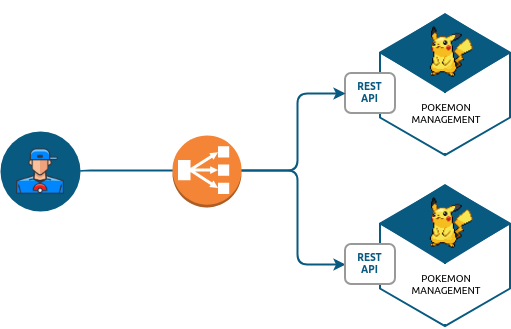
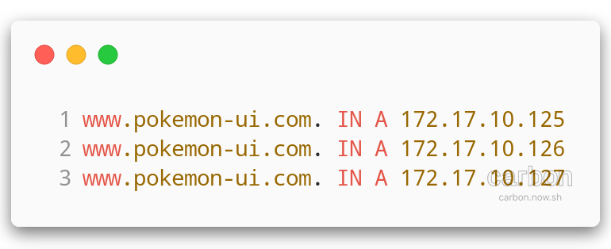
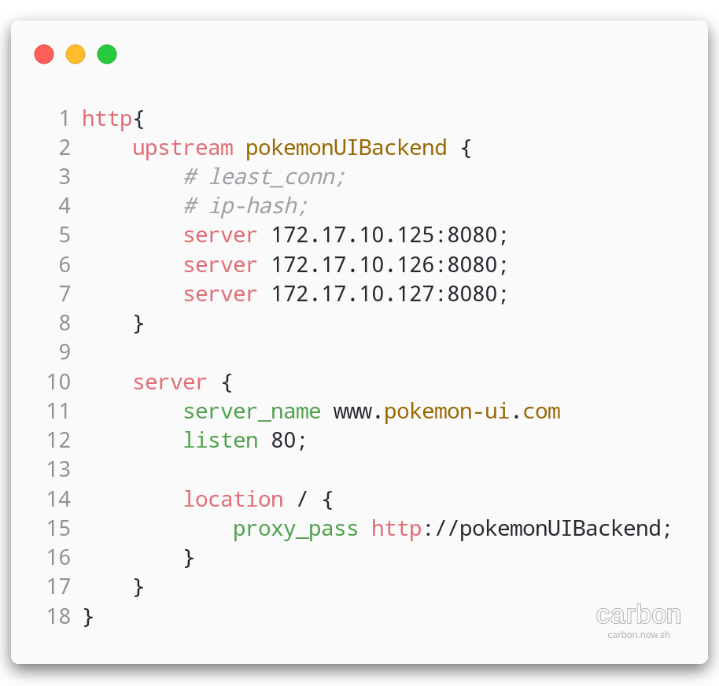
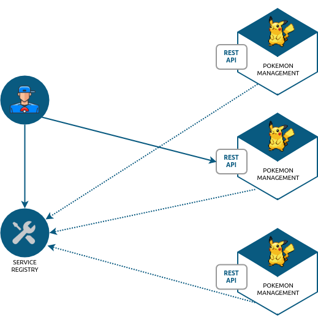
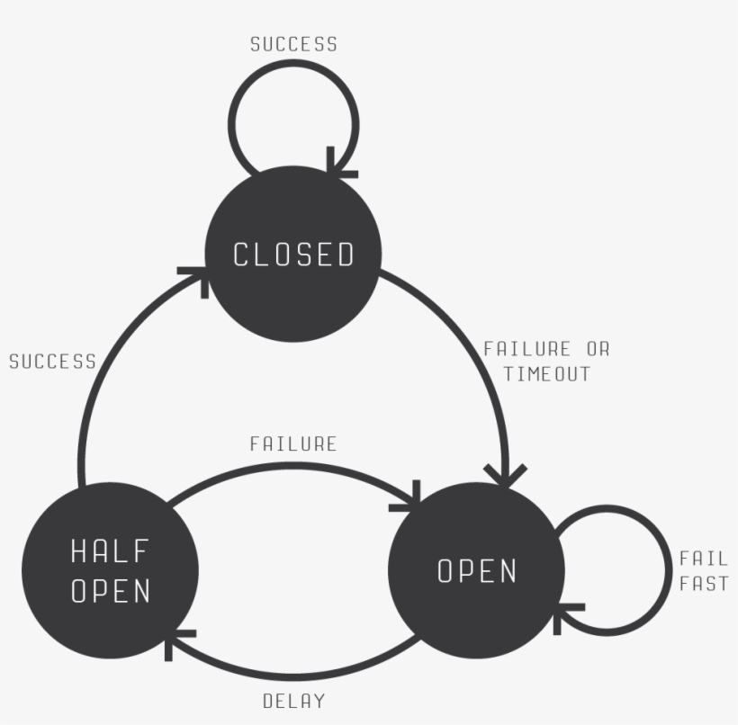
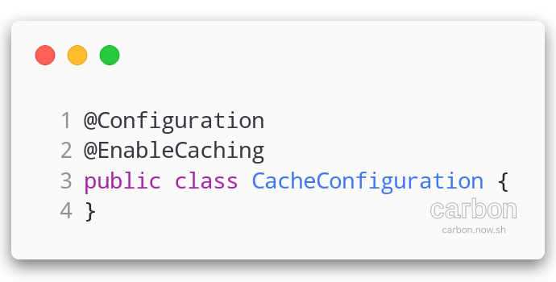
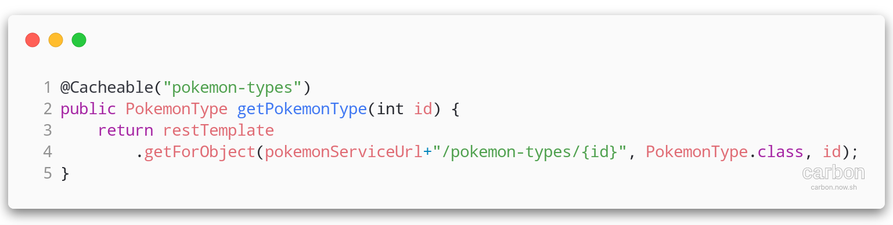
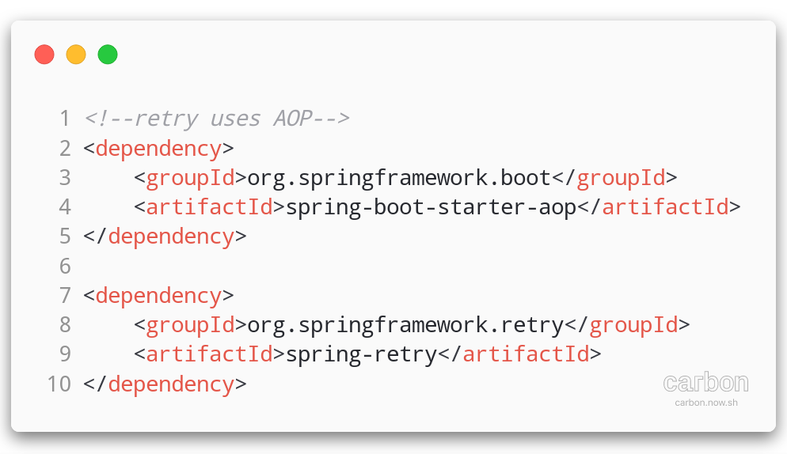
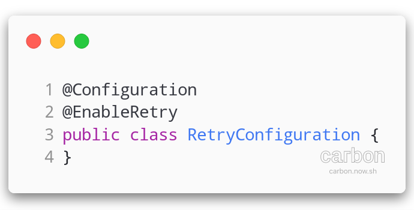
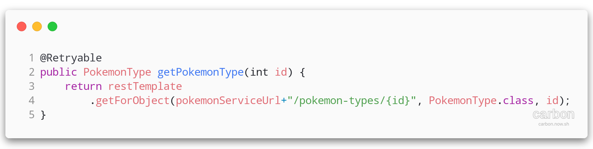

ALOM
🦄 High Availability & Micro-Services patterns
UBER

Problématiques :
Comment absorber la charge ?
Que faire si un micro-service ne répond pas ?
Comment limiter la charge ?
💡 Trouver le point de rupture d'un micro-service
Faire un test de charge
- JMeter
- Gatling
Patterns d'architecture
Load-Balancing
Répartition de charge sur plusieurs serveurs
Load-Balancing
Plusieurs techniques :
- DNS load-balancing
- Reverse-proxy load-balancing
- Client-side load-balancing
Plusieurs stratégies
- round-robin
- least-connection
- ip-hash
- cookie
DNS load-balancing (round-robin)
Le serveur DNS répondra séquentiellement chaque adresse IP
⚠️ Les services doivent être "stateless" !
reverse-proxy load-balancing
un serveur intermédiaire qui fait le travail (Apache httpd, HAProxy, Nginx...)
reverse-proxy load-balancing
ℹ️ Les services peuvent être "statefull" en ip-hash!
client-side load-balancing
client-side load-balancing
Le client (micro-service java) récupère la liste de toutes les adresses d'un service
Il se charge de répartir les appels
Nécessite un service-registry
Cache
Mettre en cache des objets :
- Améliore les temps de réponse
- Limite les appels aux systèmes sous-jacents
⚠️ La mise en cache est facile. Supprimer des objets en cache est à réfléchir!
Cache
Types de cache
- Local : en mémoire ou sur le disque (une Map !, EhCache, ...)
- Distribué : un service dédié (Redis, Hazelcast, ...)
Le cache local est toujours plus performant, le cache distribué est partagé entre toutes les instances d'un service, mais nécessite un appel réseau !
ℹ️ Cache distribué
Un cache distribué peut permettre de gérer une session utilisateur dans un système stateless !
La session est stocké en cache, et non plus en mémoire, elle peut être disponible sur l'ensemble des instances de notre application !
Supprimer des objets du cache
Le cache est pratique pour les données "référentielles"
Pour les données "vivantes", prévoir une éviction du cache quand l'objet est modifié
Notion d'expiration ou TTL
Cache Vs The cost of I/O :
| Action | Latency | # of cycles | Human Time |
|---|---|---|---|
| 1 Cycle CPU (3GHz Clock) | 0.3 ns | 1 | 1 s |
| RAM access | 70 - 100 ns | 233 - 333 | 3.5 - 5.5 m |
| NVMe SSD | 7 - 150 µs | 23k - 500k | 6.5 h - 5.5 d |
| Internet: SF to NYC | 40 ms | 130 M | 4.2 years |
Résilience
Capacité d'un système à surmonter une altération de son environnement
En micro-services
Que faire si le micro-service auquel j'ai envoyé une requête n'est pas disponible ?
- 500 Internal Server Error
- java.io.IOException: Connection reset by peer
- java.net.ConnectException: Connection refused
🔃 Retry !
🔃 Retry !
Avec un peu de chance, le micro-service sera dispo quelques milli-secondes après cette erreur.
Si le micro-service est derrière un load-balancer, le load-balancer va désactiver le routage vers l'instance en erreur.
Permet de compenser des erreurs temporaires
java.io.IOException: Connection timed out
Notre service a passé du temps à attendre une réponse qu'il n'a pas eu.
Il est probable que les appels suivants auront le même problème
Circuit-Breaker
On "ouvre" le circuit si on a rencontré plusieurs erreurs/timeout
fail-fast
On peut fournir un mode-dégradé
On refermera le circuit petit à petit si tout se passe bien
Circuit-Breaker
Implémentations avec Spring / Spring-boot
- Cache
- Retry
Cache (spring-boot-starter-cache)
@EnableCachingactive la gestion du cache (création d'unCacheManager)@Cacheable("<cache-name>")active le cache sur une méthode
Si pas de librairie de cache dans le classpath, Spring utilisera une ConcurrentHashMap
Librairies (Cache providers): EhCache, Redis
>Il est possible de recevoir le CacheManager en injection de dépendances pour manipuler directement le cache
@EnableCaching
@Cacheable
Retry spring-retry
@EnableRetryactive la gestion du retry@Retryableactive le retry sur une méthode à chaque exception ! (3 tentatives par défaut)
spring-retry
@EnableRetry
@Retryable
TP